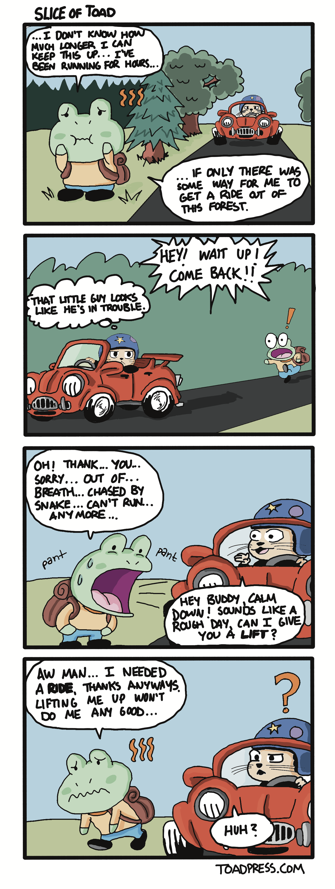

toad press
tariq's online (almost) daily press
a small personal site that shares human vibes. 08-02-2026-SUN version
|
Slice of Toad #3: Lift |
Thursday's Entry 08-06-2026Today I am thinking about time. It’s a wonder how it just passes so quickly sometimes, while at others it moves as slow as a snail. I woke up this morning and realized the sun and moon have already performed their dance several times this week - it is Thursday already! The next thought - which, depending on how sleepy I am, can take a few minutes - was another exclamation altogether: it’s trash day! I forgot to take out the trash! While rounding up trash bags around the home and ensuring I didn’t forget anything (spoiler: I forgot something) I reflected on time. It appears that, as we age, time seems to pass quicker. ‘Seems’ is the right word. I believe the phenomenon deals with relativity and how our brain processes time passage the longer we are alive but, alas, I am not a doctor of philosophy. But I think this is only one side of the coin. The other side is as plain as bright green copper oxidation. Time flies when you’re having fun. Despite our age, be it old or young or somewhere in between, if we happen to trip and stumble upon or deliberately seek out a fun experience, the clock begins to speed up. This was the case when I was younger and would play video games all day, it is also the case when I’m out with my wife hopping between cafes to try different pastries. I suppose there is also a third side, but that creates a coin that doesn’t really exist in our reality, so forgive me for the bad analogy. The third is that time tends to slow during the serious moments of our lives. When we are waiting for a loved one’s medical test results. When we await the start time for a final exam, nervous and palms sweaty in a crowded exam hall. When we stare nervously at our watches or phones while waiting for a first date. When the world quiets around us and lowers the shades for an important conversation. Time is really funny, the way it works. Einstein said that it is relative (I think, I really hope it was him that said this) and there is a lot of truth to that. For something so constant, it is incredibly and comically variable. Speaking of time, I recently learned that double-spacing after sentences is not something that needs to be done anymore while typing. My wife explained this to me. I majored in English and believed I knew more than her (a big mistake) but turned to the internet for an answer. It turns out, I was wrong. Modern screens don’t require the ancient analog input of an additional space to make a paragraph appear to flow. I realized I was taught by people who learned how to type on typewriters. I realized I am…aging. I realize now, too, that I continue to double-space after periods because old habits are hard to break. We can start with this one right here! Thank you for reading Toad Press! I have been eating a lot of watermelon lately, and reminiscing on old cartoons. Enjoy your summer! -Tariq |
Tuesday's Entry 08-04-2026I recently started playing a few different video games and I have a few things to say about it. First, it feels so strange to write that introduction sentence. There was a time in my life where I would be playing video games daily, without a question and definitely without any shock value. Today, however, it feels very heavy and weighted. For the past 10 years I’ve been busy with post-graduate schooling, training, and work. And, although I have kept up on games, it has mainly not been on my terms - breaks from school, vacation from work, etc. It has been very hard to carve out time every day to devote to one of my oldest hobbies. I am now making an effort to change that. What is absolutely comical and anticlimactic about all of this is the games that I chose to start playing. If you were expecting some of the newest titles on the market, you’ll be disappointed. I started playing Mother / Earthbound Beginnings on NES (specifically, on my Switch Lite via the NSO game collection). This game actually predates me! I am not too far into the game but I love the music, the muted colors, the humor and, strangely, the difficulty. It’s quite a difficult game and I just got to the cemetery. My goal is to try to get through the game blind, I am slowly learning that this may take some time but, as I am sure the developers intended, I am learning through trial and error. My favorite enemy encounter so far was a Crow, standing on two feet with fancy dress shoes, who stole my only hamburger. I’m sure the absurdity only grows from there. The other game I started is the original Pikmin (also on the Switch, re-released on a single cartridge alongside Pikmin 2). This is a game that I never got to play on GameCube, despite the GameCube being one of the most played consoles in my home. This reminds me - the other day I wrote an essay about my love for summer vacation memories, I forgot to mention that my brothers and I instituted a strict hour by hour turn-based schedule for who got to play the GameCube during the summer of 2003. We alternated between the three of us (our three year old brother wasn’t playing at that time) and would play the whole day away, hour by hour. When one of us got close to beating a game, the others would happily give up their hours of play time to watch the one brother beat that game. I fondly remember my younger brother and I giving up a whole day’s worth of turns to watch our older brother beat Luigi’s Mansion. Anyways, back to the topic at hand: Pikmin is a very lovable game. What I love most about it is how these little plant aliens with carrot-esque head antennae just love Olimar - you - unconditionally and after first sight. I understand that it is necessary for the game mechanic that the Pikmin follow your every command, but that small detail warms my heart. It also sours my soul a bit whenever any of them are put in harm’s way and die. I wish there was a way to simply rescue these creatures and traverse the game on your own, but alas, that would make Pikmin unplayable. Regardless, it is good quirky fun with a great soundtrack to boot. I think both games actually compliment each other well and I am enjoying hopping back and forth between them (all on the same console - technology!). And, with that, I now seem to have aged myself. I will return to my grown-ups table and play my decades-old games in peace. Thank you for reading Toad Press today! -Tariq |